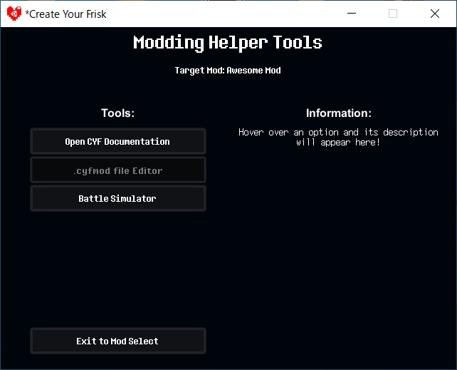
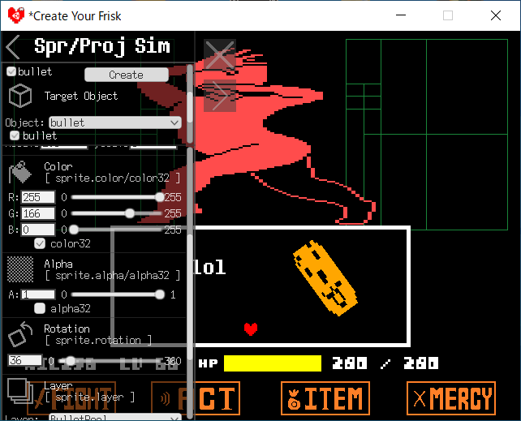

Misc. Changes
Disclaimer Screen
You can check Asterisk Mod's version. (CYF's version is always v0.6.5.)
Ah, It is a little changed.
Mod Selection Screen
You can show your mod's description. (See Additional Setup)
There are Asterisk Mod Features Mods and
You can cehck out some examples.
Asterisk Mod Features [Basic(?) Examples]
-
00 - Copying Error Message: you can copy error message.
-
01 - How to check users use AsteriskMod: the method of checking
that users use AsteriskMod and its version
(it can be launched on official CYF)
-
02 - MERCY Menu: changes MERCY menu's options(texts)
[Example of sparetext and fleetext]
-
03 - Reverse: reverses camera horizontally or/and vertically
[Example of Misc.Camera...Reverse() and Misc.cameraRotation]
-
04 - Karma: create processing of karma
[Example of PlayerUtil.SetHPControlOverride(), PlayerUtil.SetHPBarLength(),
and PlayerUtil.SetHP()]
-
05 - No MERCY: inactivates the button and moves each buttons
[Example of The ButtonUtil Object]
-
06 - FELLize: recolors most CYF's UI
[Example of coloring functions]
-
07 - Change Asterisk: changes asterisk...
[Example of Arenautil.SetAsteriskChar()]
-
08 - Over LV 99: WTF
[Example of PlayerUtil.SetHPControlOverride(), PlayerUtil.SetHPBarLength(),
and PlayerUtil.SetHP()]
-
09 - Multiple Soul Mode Test: Blue and Purple Soul Mode.
[Example of PlayerUtil.GetSoulAlpha()]
-
10 - R A I N B O W: R A I N B O W !
[Example of coloring functions]
Asterisk Mod Features 2 [Examples of CustomState]
-
01 - Only Enemy Turn: it's not gonna BE your turn. ever...
-
02 - Title and Menu: Creates Title and Menu Screen
-
03 - Alt ITEM Menu: Creates Japanese-styled ITEMMENU
Asterisk Mod Features 3 [Examples of Experimental Features]
You need to enable Experimental Features in AsteriskMod's option before launching mods.
-
01 - Encounter Ending: BeforeEncounterEnding()
-
02 - Mute: Mutes sounds
-
03 - Text Volume: text.SetSoundVolume(), text.SetSoundMute()
-
04 - Message Box (Windows): Misc.MessageBox()
Click "Option →" button to open option window.
Currently, you can use below features:
-
Modding Helper Tools: Opens Menu of Modding Helper Tools.
This feature contains Open CYF Documentation, .cyfmod File Editor, and Battle Simulator.
-
CYF Option: Opens the option of Normal (Official) CYF.
-
Asterisk Mod Option: Opens the option of AsteriskMod.
Modding Helper Tools
You should select your developping mod on Mod Selection Screen
before opens Modding Helper Tools.

Modding Helper Tools selects one target mod.
.cyfmod File Editor
AAAAAAAAAAAAAAAAAA
Battle Simulator
This feature is useful to check the parameters(for example, position, rotation, and color) of
The Sprite Objects, The Bullet Object,
and The StaticText Object.
I recommend you should set window scale to x2!

You can check the positions of objects without launching mod before you write the codes .
Options
Asterisk Mod also adds some options.
You can see that info and options when you select Asterisk Mod Option.
There are below options available:
-
Language: Switch the engine's language, English or Japanese.
日本語の翻訳は各オプションの説明と一部のエラーメッセージ、及びゲーム中のプレイヤー名に適応されます。
-
Replace Prepared Mod's Name: Whether replaces mods' title and subtitle to modder prepares.
-
Show Always Mods' Descriptions: Switch visibility of mods' description.
-
Allow illegal change option: Allow/Ignore/Error to change the option by SetAlMightyGlobal().
-
Experimental Features: Allow Experimental Features.
Experiment features contains the contents which will be added future update and
the contents that may occur some error or may be unstable.
Show Error Dog option is deleted.
Error Screen
You don't need to find log file anymore!
You can press C key to copy the error message in error screen.
Any Question, Help or Reporting Bugs or Errors
Before reporting help or issue, you should check:
- Is that related to AsteriskMod?
- Is not that solved by reading this documentation?
- ...anyways, is that question about me?
* Note: I'm not good at to read and write in English.
* Note: I have been suffering from eyestrain, so I may not be able to respond right away.
If you need help or have question, conatct me with below method.
-
Mentioning to me in Official CYF's Discord.
(My name on the server is Nil256 (Fennene).)
-
My Twitter (@FN_Nil256)
(You don't need to follow me. You can send to me by DM only if you have twitter account.)
Other methods?
umm, if there were more AsteriskMod's users and I were allowed to create AsteriskMod's Discord Server, that became the one of the good method...
I have my discord server and there is "cyf-asterisk-modding-help". (ahh, that is NOT for only AsteriskMod...)
Moreover, that server's defualt language is Japanese. That is not good one.